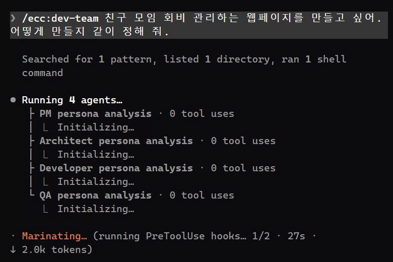
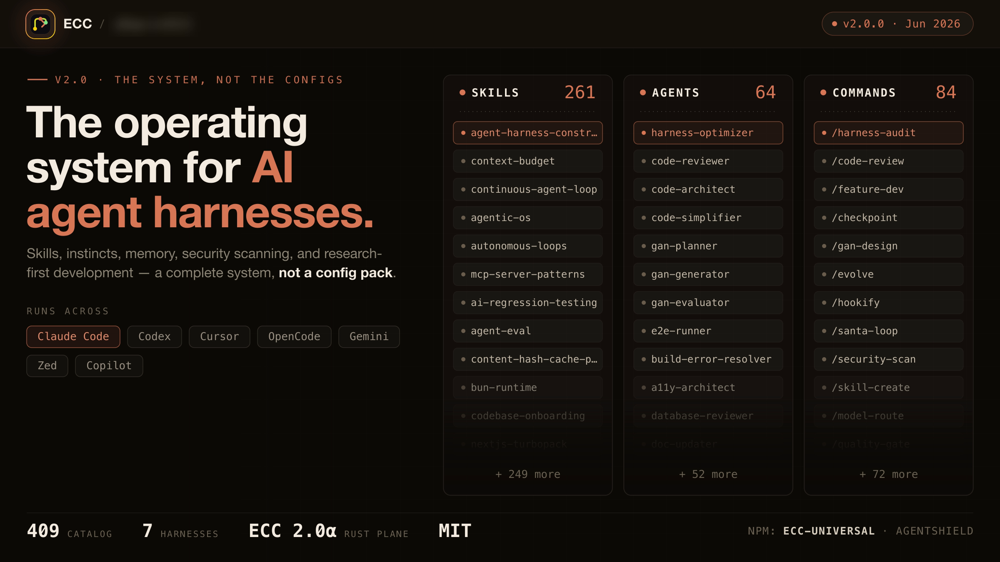
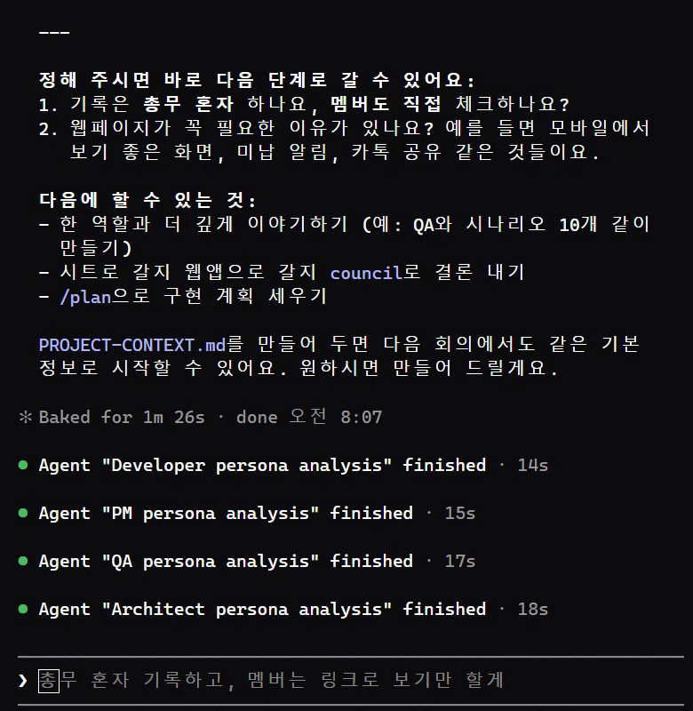
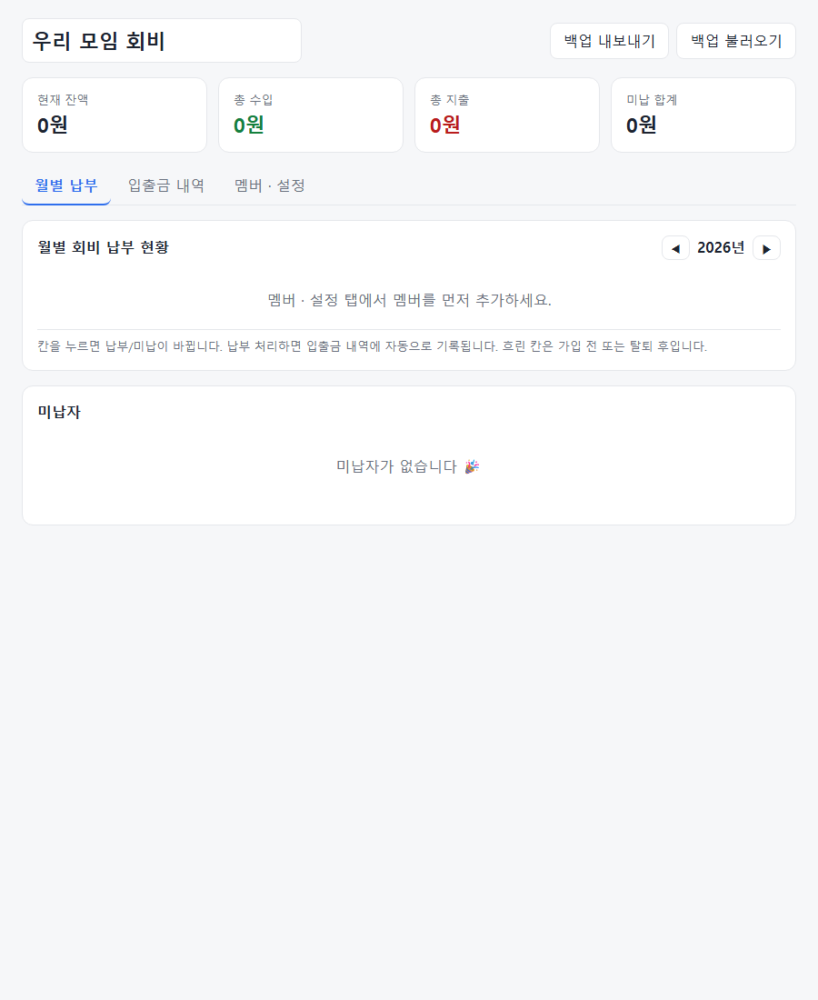

앤트로픽 해커톤 우승자가 열 달 동안 매일 쓰던 클로드 코드 설정(스킬·에이전트·명령·자동 검사)을 플러그인 하나로 묶은 무료 오픈소스(MIT)예요. 그중 바로 체감되는 건 /ecc:dev-team — 만들고 싶은 걸 말하면 기획·설계·개발·검사 담당 넷이 서로 따로 답하고, 넷이 부딪힌 곳과 내가 정할 것만 정리해서 물어봐요. 아래는 저희가 빈 폴더에서 직접 깔고 돌린 화면이에요.

클로드 코드를 켜고 입력창에 아래 '복사해서 쓰기'의 두 줄을 차례로 넣어요. 첫 줄은 ECC 저장소를 플러그인 목록에 더하고, 둘째 줄이 실제로 깔아요. 다 깔리면 클로드 코드를 한 번 껐다 켜요. 공식 저장소(affaan-m/ECC)·플러그인 이름 ecc@ecc로만 까세요 — README가 비공식 재업로드를 경고해요.

입력창 맨 앞에 /ecc:dev-team 을 붙이고 만들고 싶은 걸 한국어로 적어요. 예: '/ecc:dev-team 친구 모임 회비 관리하는 웹페이지를 만들고 싶어. 어떻게 만들지 같이 정해 줘.' 기획·설계·개발·검사 넷이 하위 에이전트로 동시에 돌아가요(1~2분).
넷의 의견이 역할별로 나오고, 맨 끝에 '네 명 다 물은 질문', '의견 충돌', '내가 정할 것'이 정리돼요. 저희가 돌렸을 땐 기획이 '구글 시트로 80% 되면 웹페이지는 왜?', 검사가 '3월에 들어온 친구·2만 원 미리 낸 친구는 4월에 어떻게 치나?'를 짚었고, '빨리 시제품부터(개발) vs 그러다 장부 날아감(검사)'이 부딪힌 곳으로 나왔어요. 실행마다 말은 조금씩 달라져요.

물어본 것에 답하면(예: '총무 혼자 기록하고, 멤버는 링크로 보기만 할게') 같은 대화에서 그대로 이어서 만들어 달라고 하면 돼요. 바로 짜지 말고 계획부터 보고 싶으면 클로드 코드 기본 계획 모드(Shift+Tab 두 번)나 /ecc:plan 을 쓰세요.
같은 요청을 설정 없는 클로드 코드에 '회비 페이지 만들어 줘'로 넣었을 땐 묻지 않고 바로 index.html을 만들었어요(저장은 내 브라우저에만). dev-team은 만들기 전에 '친구들도 링크로 보나?' 같은 걸 먼저 짚어 줘서, 엉뚱한 걸 만든 뒤 처음부터 다시 설명하는 일을 줄여 줘요.

클로드 코드 입력창
/plugin marketplace add https://github.com/affaan-m/ECC
클로드 코드 입력창
/plugin install ecc@ecc
클로드 코드 입력창
/ecc:dev-team 친구 모임 회비 관리하는 웹페이지를 만들고 싶어. 어떻게 만들지 같이 정해 줘.
클로드 코드 입력창
/ecc:dev-team 우리 가게 예약 받는 페이지를 만들고 싶어. 놓치기 쉬운 것부터 짚어 줘.
클로드 코드 입력창
/ecc:plan 위에서 정한 대로 index.html 한 파일로 만들어 줘
도움이 되셨다면
@ai.antenna.kr
에서 바로 쓰는 AI 활용법을 계속 올립니다.